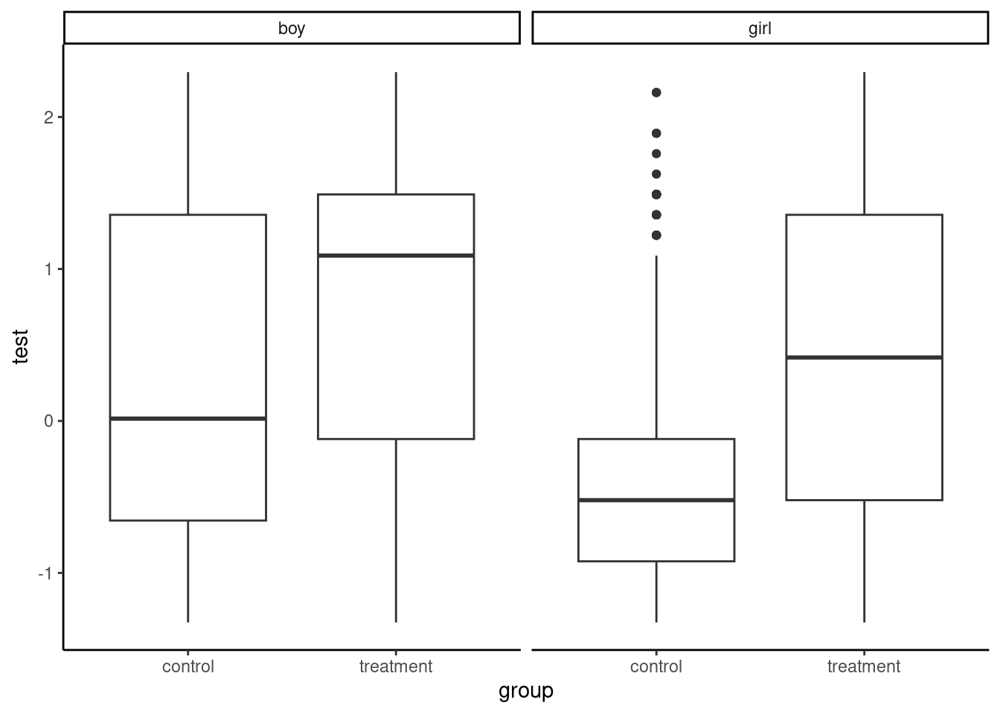
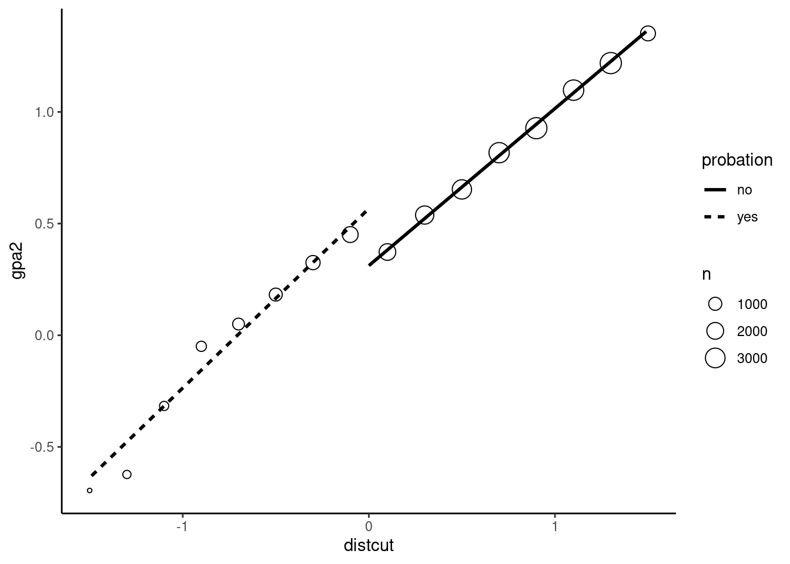
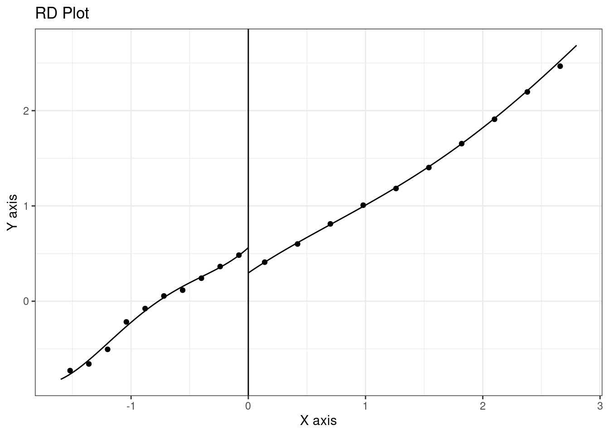
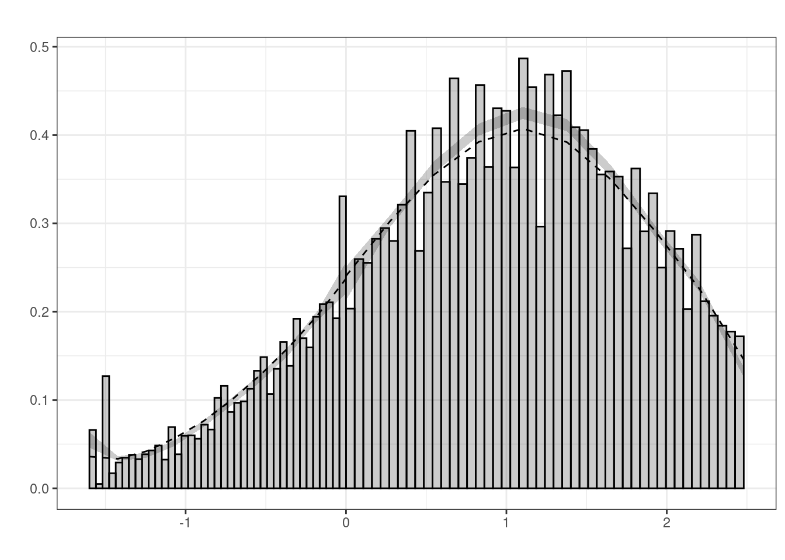
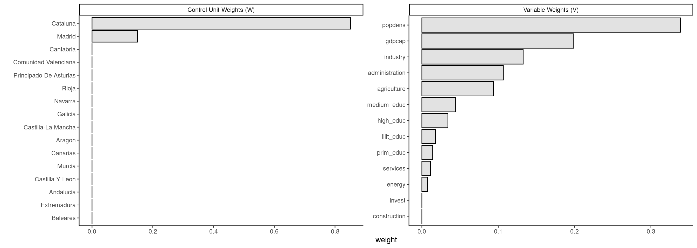
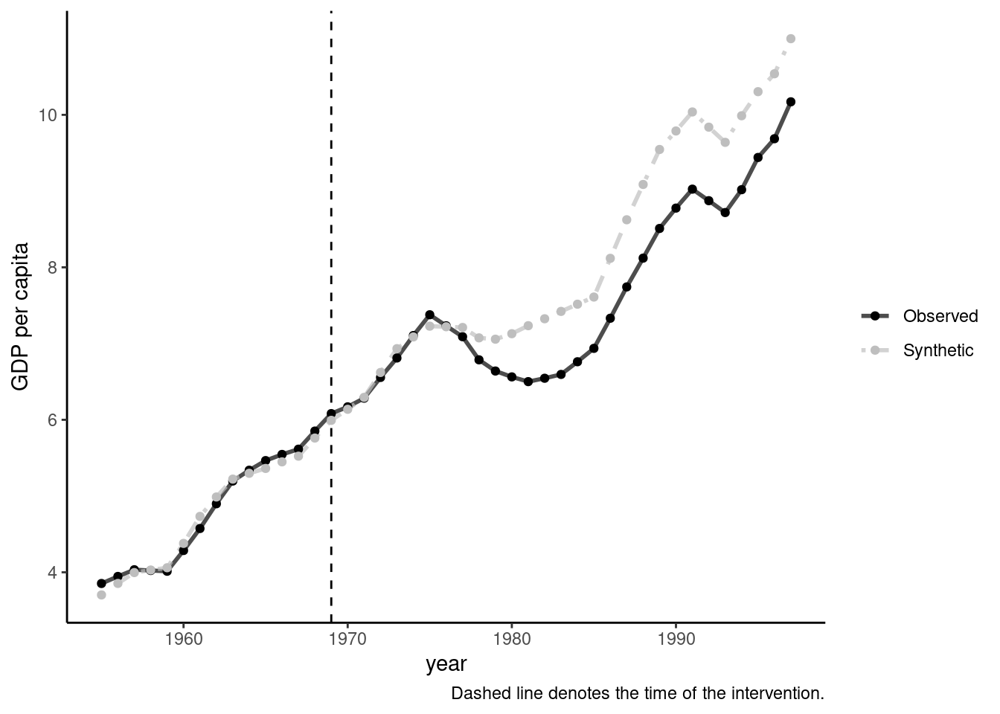
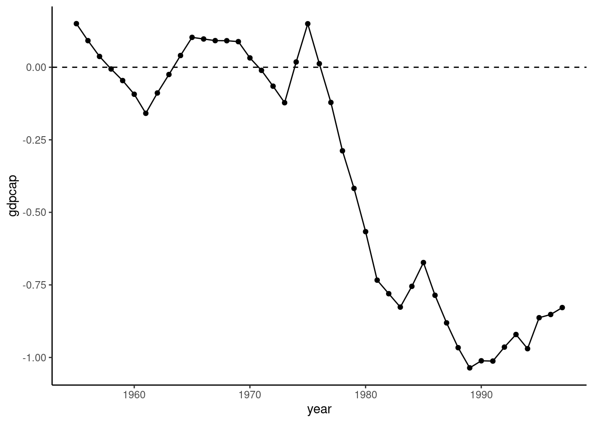
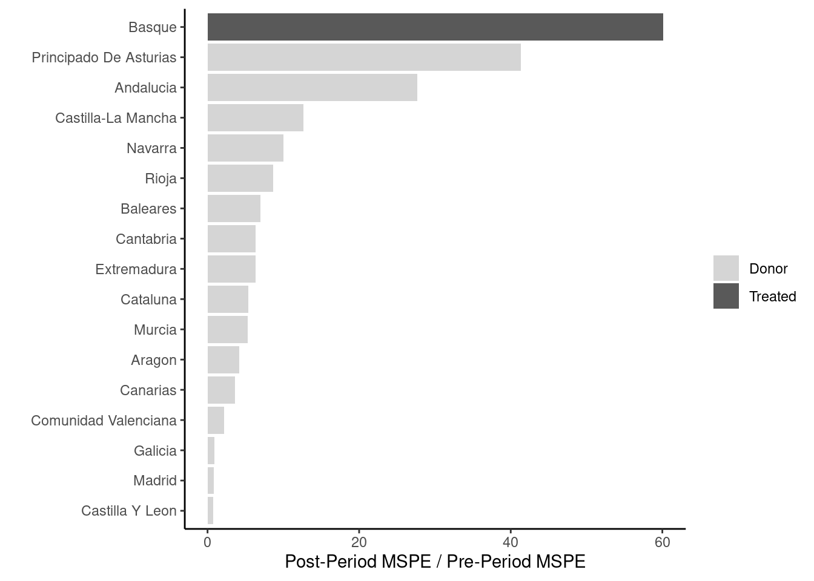
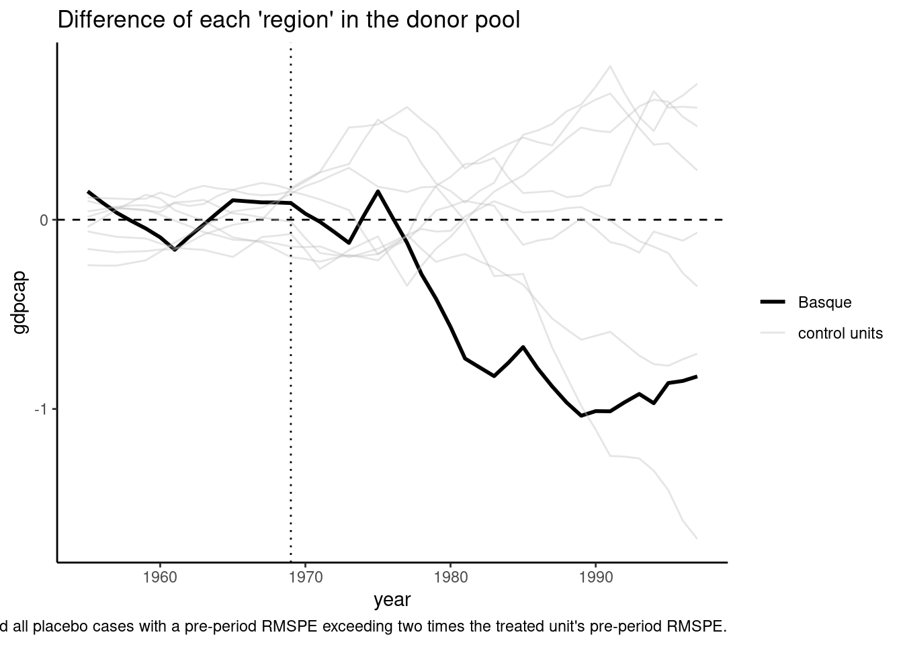

8 Treatment effect
In treatment evaluation analysis, one is interested in the effect of a treatment on a relevant outcome. Popular examples are the effect of microcredit access on the economic outcomes of households in developing countries, effects of a reduction of class size on the academic outcomes of pupils, effects of a youth job training program on employment status. In the simplest case, the outcome \(y\) is a continuous variable and the treatment variable \(D\) is binomial (1 for treatment, 0 otherwise). The causal impact of \(D\) on \(y\) is measured by the difference between the value of \(y\) if \(D=0\), denoted by \(y_0\) and if \(D=1\), denoted by \(y_1\). To an individual for which \(D=0\), \(y_0\) is the observed or factual situation. The value of \(y\) if the individual had received the treatment is \(y_1\) and is called the counterfactual. The fundamental problem is that the counterfactual is unobserved. This framework leads to the potential outcome model, which became increasingly popular in econometrics. On a sample of size \(N\), denoting \(y_{0n}\) and \(y_{1n}\) the two values of the outcome, the natural estimator of the effect of the treatment would be:
\[ \frac{\sum_{n= 1} ^ N (y_{1n} - y_{0n})}{N} \tag{8.1}\]
but is unfeasible for a missing data problem: either \(y_{0n}\) or \(y_{1n}\) is observed, but not both, as an individual cannot be at the same time treated and untreated. In real settings, we have a sample that contains:
- a subsample of individuals who received the treatment (\(D=1\)) called the treatment group (denoted by \(T\)),
- a subsample of individuals who didn’t receive the treatment (\(D=0\)) called the control group (denoted by \(C\)).
and an alternative estimator is obtained using the difference between the mean values of the outcome in the treatment and in the control group:
\[ \frac{\sum_{n \in T} y_n}{N_{T}} - \frac{\sum_{n \in C} y_n}{N_{C}} \tag{8.2}\]
Moreover the data can be either experimental or observational, the difference between the two being that in the first case, the treatment is randomly assigned to some individuals. With experimental data, Equation 8.2 should be a reliable estimator of the effect of the treatment. On the contrary, in case of observational data, the observed and unobserved characteristics of the individuals in the two groups may be different and therefore, the estimator given in Equation 8.2 may include partly these differences and therefore may be biased. To overcome these difficulties, different estimators have been suggested for observational data, which rely on different assumptions that are detailed, for example, in Cameron and Trivedi (2005), pp. 862-865.
Section 8.1 presents the estimation of the treatment effect with experimental data. Section 8.2 explains how the instrumental variable estimator can be used to estimate the effect of a treatment. Section 8.3 presents the regression discontinuity estimator, Section 8.4 the difference in difference estimator and Section 8.5 the matching estimator. Finally, Section 8.6 is devoted to the synthetic control estimator.
8.1 Randomized experiment
Randomized experiences are the ideal setting to analyze treatment effects. The treatment and the control groups are composed of individuals who are randomly drawn from the same population, and therefore the average observable and unobserved characteristics in both groups should be similar.
To illustrate the use of randomized experiments, we consider the study of Burde and Linden (2013) who study the effect of village-based schools on children’s academic performance. The sample comprises villages from the Ghor province in northwestern Afghanistan. More specifically, 31 villages were selected and formed 11 village groups. Five of them received a village-based school in summer 2007. In fall 2007, a survey was conducted in the 31 villages. The two outcomes of interest are the enrollment status of children between the ages of 6 and 11 and the score obtained to a short test covering math and language skills.
The first step of the analysis consists of checking that the observable characteristics are similar in the treatment and in the control group. For numerical variables, this can be performed using a t test of equal means. Assume that \(x\) is drawn from a normal distribution, with potentially a different mean for the treatment and for the control group, but the same variance \(\sigma_x ^ 2\). Then, \(\bar{x}_T = \sum_{n\in T} x_n / N_T\) and \(\bar{x}_C = \sum_{n\in C} x_n / N_C\) are normal variables with means equal to \(\mu_T\) and \(\mu_C\) and a variance equal respectively to \(\sigma_x ^ 2 / N_T\) and \(\sigma_x ^ 2 / N_C\). Moreover, the difference of the means is also a normal variable with mean \(\mu_T - \mu_C\) and a variance equal to the sum of the two variances, the covariance being null for a random sample. Therefore:
\[ \frac{(\bar{x}_T - \bar{x}_C) - (\mu_T - \mu_C)}{\sigma_x\sqrt{1 / N_T + 1 / N_C}} \sim \mathcal{N}(0, 1) \tag{8.3}\] Replacing the unknown \(\sigma_x ^ 2\) by the unbiased estimate:
\[ \hat{\sigma}_x ^ 2 = \frac{\sum_{n\in T} (x_n - \bar{x}_T) ^ 2 + \sum_{n\in C} (x_n - \bar{x}_C) ^ 2}{N_T + N_C - 2} \] and, with the hypothesis of equal mean (\(H_0: \mu_T = \mu_C\)), \(\frac{\bar{x}_T - \bar{x}_C}{\hat{\sigma}_x \sqrt{1/N_T + 1/N_C}}\) is a Student t with \(N_T + N_C - 2\) degrees of freedom. The Student t-test assumes that the variance of \(x\) is the same in both groups. Welch’s t-test, or the unequal variance t-test, extends the simple t-test to the case where the variance of \(x\) is different in the two groups.
stats::t.test computes the two flavors of the test. It uses a formula-data interface and has a supplementary argument called var.equal which is FALSE by default. Therefore, Welch’s version of the test is computed by default and the simple t-test is obtained by setting var.equal to TRUE. We apply the two flavors of the test to the distance variable, which is the distance to the nearest formal school, using the group variable which is a factor with levels "control" and "treatment":
t.test(distance ~ group, afghan_girls) %>% gaze
## diff = 0.253 (0.058), t = 4.393, df: 1483, pval = 0.000and the hypothesis of equal mean is highly rejected. Computing the simple version of the t-test:
t.test(distance ~ group, afghan_girls, var.equal = TRUE) %>% gaze
## diff = 0.253 (0.058), t = 4.384, df: 1488, pval = 0.000we get almost the same result. This last version of the test is equivalent to the result of a regression of the outcome variable on the group dummy:
lm(distance ~ group, afghan_girls) %>% gaze
## Estimate Std. Error t value Pr(>|t|)
## grouptreatment -0.2529 0.0577 -4.38 1.2e-05The coefficient of the intercept is the mean for the control group and the coefficient of grouptreatment is the difference of the means for the two groups. The t-value is exactly the one obtained using t.test with var.equal = TRUE.
Balance between groups of factors can be tested using Pearson’s \(\chi^2\) test. It is based on the comparison of the observed joint distribution of the two variables and the one obtained using the independence hypotheses (obtained by multiplying the marginal frequencies of the two variables). Denote \(o\) and \(e\) the observed and the hypothesized frequencies, \(i\) the index of the cell and \(N\) the size of the sample:
\[ \sum_i \frac{(o_i - e_i) ^ 2}{e_i} \tag{8.4}\]
the statistic is, under the hypothesis of independence, a \(\chi ^ 2\) with a number of degrees of freedom equal to \((J_1 -1) \times (J_2 - 1)\) where \(J_1\) and \(J_2\) are the number of modalities for the two factors.
In the afghan_girls data set, ethny is a factor with levels "other", "farsi" and "tajik". We first compute the frequency table using the table function, which is similar to dplyr::count, but the input is a series and not a data frame and the result is an object of class table, which is much alike an object of class matrix, and not a data frame. We then compute the relative frequencies using the prop.table function. Note that prop.table has a margin argument that we don’t use here.1
obs_freq <- prop.table(table(afghan_girls$group, afghan_girls$ethny))In case of independence, the frequencies are obtained using the outer product of the marginal frequencies:
freq_group <- prop.table(table(afghan_girls$group))
freq_ethny <- prop.table(table(afghan_girls$ethny))
ind_freq <- outer(freq_group, freq_ethny)Applying Equation 8.4, we obtain:
This test can be conveniently computed using the stats:chisq.test function:
chisq.test(table(afghan_girls$group, afghan_girls$ethny)) %>% gaze
## X-squared = 2.846, df: 2, pval = 0.241and the hypothesis of independence is not rejected. The whole table of balance is often called “Table 1”, as it is the first table that appears in most articles in medical reviews. It can be computed using the gtsummary::tbl_summary function, which has a by argument that indicates the grouping variable. tbl_summary has a lot of arguments, and auxiliary functions that enables to customize the results.2 The balance table for the afghan_girls data set is presented in Table 8.1.3
library("gtsummary") ; library("kableExtra")
afghan_girls %>%
select(group, head_child:ethny) %>%
tbl_summary(by = group,
missing = "no",
statistic = all_continuous() ~ "{mean} ({sd})",
type = list(age ~ "continuous"),
digits = all_continuous() ~ 2) %>%
add_p(all_continuous() ~ "t.test",
pvalue_fun = ~ style_pvalue(., digits = 2)) %>%
as_kable_extra(booktabs = TRUE) %>% kable_styling() %>%
column_spec(1, width = "15em")| Characteristic | control N = 708 |
treatment N = 782 |
p-value |
|---|---|---|---|
| head_child | 645 (91%) | 731 (93%) | 0.085 |
| sex | 0.45 | ||
| boy | 386 (55%) | 411 (53%) | |
| girl | 322 (45%) | 371 (47%) | |
| Child's age, fall 2007 | 8.31 (1.64) | 8.32 (1.66) | 0.92 |
| Length of time family has lived in the village, fall 2007 | 27.59 (15.66) | 30.30 (15.51) | <0.001 |
| occup | 0.67 | ||
| farmer | 515 (73%) | 561 (72%) | |
| other | 193 (27%) | 221 (28%) | |
| Age of head of the household, fall 2007 | 39.97 (11.40) | 40.14 (11.19) | 0.77 |
| Years of education of the head of the household, fall 2007 | 3.08 (3.51) | 3.31 (3.54) | 0.19 |
| Number of people in the household, fall 2007 | 7.82 (2.56) | 8.40 (2.92) | <0.001 |
| Number of jeribs of land owned by household, fall 2007 | 1.27 (1.63) | 1.34 (1.56) | 0.39 |
| Number of sheeps and goats owned by the household, fall 2007 | 5.63 (6.99) | 7.55 (8.09) | <0.001 |
| Distance (miles) to the nearest non-community based school, fall 2007 | 3.16 (1.09) | 2.91 (1.13) | <0.001 |
| ethny | 0.24 | ||
| other | 413 (58%) | 429 (55%) | |
| farsi | 148 (21%) | 163 (21%) | |
| tajik | 147 (21%) | 190 (24%) | |
| 1 n (%); Mean (SD) | |||
| 2 Pearson's Chi-squared test; Welch Two Sample t-test |
The set of tests doesn’t detect any significant differences between the two groups for the covariates head_child, sex, age, occup, age_head, jeribs, distance and ethny. On the contrary, for the duration, hsize, sheeps and distance covariates, the equal mean hypothesis is strongly rejected. The next step is to apply the same tests to the outcomes which are, in this study, enrollment and test. For the test variable, a boxplot is presented in Figure 8.1, with a separate plot for boys and girls.
afghan_girls %>% ggplot(aes(group, test)) +
geom_boxplot() + facet_wrap(~ sex)
There seems to be a large positive effect of the treatment on the results of the test. Moreover, the scores for boys are much higher than for girls. For girls, we get:
The effect is strong (about 0.75, which means three-quarters of a standard deviation of the score, as this variable is standardized) and highly significant. As some covariates are unbalanced, this estimator may be biased. Therefore, it is recommended to measure the effect as the coefficient of group in a multiple regression with all the available controlling variables. Moreover, adding relevant variables will increase the precision of the estimation.
The coefficient is slightly lower but still very significant.
8.2 Instrumental variable estimator
Imbens and Angrist (1994) and Angrist, Imbens, and Rubin (1996) consider the use of instrumental variables in the context of the potential outcome model. We consider the simple case where the treatment \(d\) is binary and the instrument \(w\) is also binary.4 The value of the outcome for individual \(n\) for a given combination of \(d\) and \(w\) is denoted by: \(y_n(w_n, d_n)\); \(w\) can be used as an instrumental variable if \(w\) is related to \(y\) only because of its influence on \(d\). Stated differently, for a given value of \(d\), \(y\) is the same whatever the value of \(w\): \(y_n(0, d_n) = y_n(1, d_n)\). This is the exclusion restriction, standard in the instrumental variable literature. Therefore, potential outcome can be defined as a function of the treatment variable only: \(y_n(w_n, d_n) = y_n(d_n)\) and \(d_n\) can be expressed as a function of \(d_n\): \(d_n(w_n)\). The next assumption is that on average, \(w\) has a causal effect on \(d\): \(\mbox{E}\left(d(1) - d(0)\right) \neq 0\). The last assumption is monotonicity (Imbens and Angrist 1994) which states that \(d_n(1) \geq d_n(0) \; \forall n\). With these assumptions in hand, the causal effect of \(w\) on \(y\) is:
\[\begin{array}{rcl} y_n(1, d_n(1)) - y_n(0, d_n(0)) &=& y_n(d_n(1)) - y_n(d_n(0)) \\ &=& \left[y_n(1) d_n(1) + y_n(0) (1 - d_n(1))\right] \\ &-& \left[y_n(1) d_n(0) - y_n(0) (1 - d_n(0))\right] \\ &=& (y_n(1) - y_n(0)) (d_n(1) - d_n(0)) \end{array} \tag{8.5}\]
Therefore, the causal effect of \(w\) on \(y\) is the product of the causal effects of \(d\) on \(y\) and of \(w\) on \(d\). Consider now the relation between \(w\) and \(d\) at the individual level. Four categories can be considered (represented on Figure 8.2):
- compliers: \(d_n(1) = 1\) and \(d_n(0) = 0\),
- always takers: \(d_n(1) = d_n(0) = 1\),
- never takers: \(d_n(1) = d_n(0) = 0\),
- deniers: \(d_n(1) = 0\) and \(d_n(0) = 1\).
There are four observable categories of individuals, represented by the four squares and named by the two digits (the observed values of \(w\) and \(d\)) indicated in a gray square. The counterfactuals are represented by two circles inside the square. For example, the square called \(00\) contains the individuals for which \(w=0\) and \(d=0\). For those individuals the unobserved counterfactual is \(w=1\) and \(d\) either equal to 0 or 1. If the counterfactual is \(w = 1, d = 0\), the individual is a never-taker, \(d= 0\) whatever the value of \(w\). If the counterfactual is \(w=1, d=1\), the individual is a complier: with \(w=0\), \(d=0\), but a change of \(w\) from 0 to 1 results in a change of \(d\) from 0 to 1. With the always takers and the never takers, the causal effect of \(w\) on \(y\) in Equation 8.5 is zero because the causal effect of \(w\) on \(d\) is zero. The monotonicity assumption rules out the existence of deniers. Therefore, the causal effect of \(w\) on \(d\) reduces to the treatment effect for the compliers.
Consider now the instrumental variable estimator. It estimates, in the general case, the following population estimand: \(\frac{\mbox{cov}(y, w)}{\mbox{cov}(d, w)}\), which, for the case where both \(d\) and \(w\) are binary, reduces to:
\[ \frac{\mbox{E}\left(y(1, d(1)) - y(0, d(0))\right)} {\mbox{E}\left(d(1) - d(0)\right)} \tag{8.6}\]
The numerator is the average causal effect of \(w\) on \(y\) for the compliers and the denominator is the share of compliers in the population. Angrist, Imbens, and Rubin (1996) call Equation 8.6 the local average treatment effect (LATE) to stress the fact that what is estimated using the instrumental variable estimator is an average treatment effect for only a subset of the population called the compliers, ie those for which a change in the value of \(w\) results in a change in the value of \(d\). The numerator is also called the reduced form equation, as it measures the effect of the instrument on the outcome. The denominator is called the intention to treat equation, it measures the effect of the instrument on the treatment dummy.
As an example, we use the data set of Angrist et al. (2002) called paces. The authors investigate the effect of a large school voucher program in Columbia called PACES. This voucher covers more than half of the cost of private secondary school and may induce parents to enroll their children in private schools, which are known to provide much better service than public schools. In this case, \(w\) is a dummy for children who receive the voucher and \(d\) is a dummy for enrollment in private school.
# A tibble: 1,577 × 18
id privsch educyrs voucher pilot housvisit city phone age
<dbl> <dbl> <dbl> <dbl> <dbl> <dbl> <fct> <dbl> <dbl>
1 3 1 8 1 0 0 bogota 1 14
2 4 1 8 0 0 0 bogota 1 14
# ℹ 1,575 more rows
# ℹ 9 more variables: sex <fct>, strata <fct>, smpl <fct>,
# month <fct>, married <dbl>, finish8 <dbl>, repetitions <dbl>,
# in_school <dbl>, year <fct>The treatment variable is privsch and the instrument is voucher. Several outcomes are considered by the authors; we’ll consider only the number of years of finished education educyrs. The OLS estimate of the treatment is just the difference between the mean of the outcome for the two subsamples defined by the treatment variable:
Therefore, the number of years of education is higher by about 0.29 of a year for pupils enrolled in private schools, and the effect is highly significant. We then compute the effect of the instrument on the treatment (intention to treat) and on the outcome (reduced form):
The voucher has a large effect on enrolling in private school, the intention to treat effect being: 0.642. The effect of the instrument on the outcome is 0.108. The IV estimator is the ratio of these two effects, which is: \(0.168\). Therefore, in this example, we get an IV estimator of the treatment effect much smaller than the OLS estimator, which may be the symptom that unobserved determinants of the outcome are positively correlated with the enrollment in private school. Covariates can easily be added to the analysis. In their study, Angrist et al. (2002) use two covariates that indicate the type of survey (pilot is one if the individual was surveyed during the “pilot” survey, and housvisit is one if the survey was conducted in person and not by phone), smpl is a factor indicating the three subsamples (Bogota in 1995, Bogota in 1997 and Djamunid in 1993), phone is a dummy for owning a phone, age and sex are the age and the sex of the pupil and strata is a strata of residence. We then compute the OLS and IV estimators:
ols <- lm(educyrs ~ privsch + pilot + housvisit + smpl +
phone + age + sex + strata + month, data = paces)
iv <- ivreg::ivreg(educyrs ~ privsch + pilot + housvisit + smpl +
phone + age + sex + strata + month | . - privsch +
voucher, data = paces)
ols %>% gaze(coef = 2)
## Estimate Std. Error t value Pr(>|t|)
## privsch 0.1408 0.0424 3.32 0.00092
iv %>% gaze(coef = 2)
## Estimate Std. Error t value Pr(>|t|)
## privsch 0.1342 0.0651 2.06 0.039The two estimators are now almost identical: introducing the covariates reduces by almost one half the value of the OLS estimator and has a small effect on the IV estimator without covariates.
8.3 Regression discontinuity
Eligibility to a program is sometimes based on the value of an observable variable (called the forcing variable), and more precisely, on the fact that the value of this variable, for an individual is below or over a given threshold. Individuals just below and just over the threshold therefore constitute two groups of individuals who are very similar, except that the first group receives the treatment and the second group doesn’t. This is called a regression discontinuity (RD) design.
Plotting the discontinuity
The plot is obtained by defining bins for the forcing variable, computing the mean of the outcome for each bin, plotting the points and adding a smoothing line. The micsr package provides the convenient geom_binmeans function to compute and plot the mean of the response for bins of \(x\) (see Figure 8.3).
probation %>% filter(abs(distcut) < 1.5) %>%
ggplot(aes(distcut, gpa2)) +
geom_binmeans(aes(size = after_stat(n)), shape = 21,
center = 0, width = 0.2) +
geom_smooth(aes(linetype = probation),
method = "lm", se = FALSE, color = "black")
Two arguments of geom_binmeans are used: center to indicate the cutoff and width the width of the bins. The internal variable n is used to visualize the number of observations in every bin. Note the use of after_stat: geom_binmeans uses as stat bins, ie, it creates bins and counts the number of observations in each bin. This count (called n) is used in geom_smooth after the stat has been computed. For geom_smooth we use probation for the linetype aesthetic, so that two different smoothing lines are plotted on both sides of the cutoff. The effect of the treatment is then the difference of intercepts for the two regression lines. It is about 0.25 points of gpa in our example.
The rdrobust::rdplot function performs the same task (see Figure 8.4). There are numerous options available to customize the graphic, described in details in Calonico, Cattaneo, and Titiunik (2015).

rdplotPlacebo tests consist of applying the same visual techniques to variables that shouldn’t be impacted by the discontinuity. In Figure 8.5, we plot the high school grade percentile and we can see that there is no clear discontinuity for this variable around the threshold.

rdrobust’s functions don’t have a data argument. Therefore, series should be provided, and we could have written the previous expression as:
rdplot(y = probation$hsgrade, x = probation$distcut, nbins = 10)Using with(data, expression), series of data can be called directly in expression without prefixing them by probation$.
Computing the effect of the treatment
As seen previously, the effect of the eligibility (and the effect of the treatment if the discontinuity is sharp) is the difference between the intercepts of two smoothing lines, which can be obtained using OLS or some more complicated fitting tools like local polynomials. In the simplest case, it is given by the estimation of \(\beta_t\) in the following regression, \(t_n\) being the treatment variable and \(x_n\) the forcing variable:
\[ y_n = \beta_0 + \beta_t t_n + \beta_x x_n + \beta_{xt} x_n t_n + \epsilon_n \]
Note that the presence of \(\beta_{xt}\) allows to have different slopes on both sides of the cutoff. Two crucial choices have to be made while estimating the effect of the treatment: the bandwidth, i.e., the range of values of the forcing variable used in the estimation and the degree of smoothness of the fitting line. A larger bandwidth leads to a more efficient estimator (as the number of observations is higher), but the estimation may be biased as the sample contains observations not close enough to the cutoff. We first regress the outcome on the forcing variable interacted with the treatment variable (note the use of the * operator in the formula), with a bandwidth of \(1.5\):
Estimate Std. Error t value Pr(>|t|)
distcut 0.7036 0.0119 59.05 <2e-16
probationyes 0.2554 0.0199 12.86 <2e-16
distcut:probationyes 0.0997 0.0306 3.25 0.0011The coefficient of probationyes is highly significant; students just under the cutoff and who therefore benefit from probation have a subsequent GPA higher by one-quarter of a point. The interaction term is also positive, indicating that the slope of the regression line is higher on the right of the cutoff than on the left. To check the robustness of this result, we change the bandwidth and add a quadratic term in the forcing variable.
lm(gpa2 ~ distcut * probation, probation,
subset = abs(distcut) < 0.5) %>% gaze(coef = "probationyes")
## Estimate Std. Error t value Pr(>|t|)
## probationyes 0.2266 0.0342 6.62 3.7e-11
lm(gpa2 ~ (distcut + I(distcut ^ 2)) * probation, probation,
subset = abs(distcut) < 1.5) %>% gaze(coef = "probationyes")
## Estimate Std. Error t value Pr(>|t|)
## probationyes 0.1941 0.0289 6.71 2e-11
lm(gpa2 ~ (distcut + I(distcut ^ 2)) * probation, probation,
subset = abs(distcut) < 0.5) %>% gaze(coef = "probationyes")
## Estimate Std. Error t value Pr(>|t|)
## probationyes 0.2197 0.0512 4.29 1.8e-05Depending on the specification, the coefficient varies from 0.19 to 0.26. The rdrobust package provides the rdrobust function which computes the treatment effect using local polynomials. The degree of the polynomial is controlled with the p argument (the default is 1) and the bandwidth with the h argument. If the bandwidth is not indicated, it is automatically computed internally using the rdbwselect function.
Bandwidth (N used) : 0.457 (8592)
coefficient (se) : -0.222 (0.039)
Conv. stat (p-value) : -5.707 (0.000)
Robust. stat (p-value) : -4.595 (0.000)The bandwidth is 0.457 (as the initial range of the forcing variable is \([-1.6, 2.8]\)) and 8592 observations are used out of 44311 in the probation data set. Besides the standard t statistic, rdrobust computes a robust statistic, which is slightly lower than the conventional statistic. When the discontinuity is fuzzy, the effect of the treatment is computed using two stage least squares, the eligibility status being an instrument for treatment.
bdh <- bdh %>% mutate(eligible = as.numeric(selben < 0))
ivreg::ivreg(attendmonth ~ selben * treated | selben * eligible,
data = bdh) %>% gaze(coef = "treated")
## Estimate Std. Error t value Pr(>|t|)
## treated 1.722 0.598 2.88 0.004The effect of receiving the grant increases monthly church attendance by 1.72, and the effect is significant. The rdrobust function can be used in a fuzzy discontinuity context using the fuzzy argument to indicate the treatment variable. A matrix of supplementary covariates can be added using the covs argument.
with(bdh, rdrobust(y = attendmonth, x = selben, fuzzy = treated,
covs = cbind(age, hsize, schooling))) %>% gazeBandwidth (N used) : 1.851 (1114)
coefficient (se) : 2.072 (0.918)
Conv. stat (p-value) : 2.257 (0.024)
Robust. stat (p-value) : 2.124 (0.034)As the h argument is not specified, the bandwidth is automatically computed and is 1.851, and the number of observation used is 1114 out of 2645 in the original data set. The coefficient of treatment is 2.07 (slightly higher than the one obtained previously), and the conventional and the robust tests indicate that the coefficient is significant at the 5% level.
Manipulation test
A critical hypothesis of regression discontinuity designs is that individuals are set randomly on both sides of the cutoff. On the contrary, individuals being aware of the existence of the treatment and of the value of the cutoff may manipulate their value of the forcing variable in order to be on one specific side of the cutoff. In this case, the distribution of the forcing variable should also exhibit a discontinuity at the cutoff. The first manipulation test was proposed by McCrary (2008). The rddensity:rddensity function performs an extension of this test.
Bandwith (left-right) : 0.609-0.827
Observations (left-right) : 4448-12049
Statistic (p-value) : 0.764 (0.445)The p-value being equal to \(0.45\), the absence of manipulation is not rejected. The rddensity:rdplotdensity function plots the density on the left and on the right of the cutoff, with a confidence interval; if the two confidence intervals overlaps, the hypothesis of no manipulation is not rejected. This is the case with the probation data set, as shown in Figure 8.6.
ra <- rdplotdensity(dens_test, probation$distcut)
probation data set8.4 Difference-in-differences
Sometimes, the outcome is observed for two periods. In the first period, the treatment hasn’t been implemented. For the second period, some individuals have been treated (the treatment group), as some individuals haven’t (the control group). The effect of the treatment can then be estimated by:
\[ \frac{\sum_{n \in T} (y_{n2} - y_{n1})}{N_T} - \frac{\sum_{n \in C} (y_{n2} - y_{n1})}{N_C} \tag{8.7}\]
Each term is the mean difference of the outcome between the two periods for the two groups, and the estimator is the difference of these differences. Consider as an example that the treatment is a job-training program implemented in 2021 and that the outcome is wage observed in 2022. If the first term of Equation 8.7 is $1000, this means that the average annual wage in the treatment group increased by $1000 in 2022 compared to 2021. This would be a relevant estimator of the effect of the program if nothing had changed on the labor market in 2022 compared to 2021. But if the economic situation improved, then the average wages will increase even for those who haven’t been treated. This is measured by the second term in Equation 8.7 (say $600). Therefore, the effect of the treatment is the difference between the two terms, which is $400.
As an example, Di Tella and Schargrodsky (2004) sought to estimate the causal effect of police on crime. This task is difficult using non-experimental data, as there may be a reverse causality relationship between police and crime: more police reduces crime (negative causal relationship), but an increase in crime may lead authorities to increase police (positive reverse causal relationship). In July 18, 1994, a terrorist attack destroyed the main Jewish-owned center in Buenos Aires, Argentina, killing 85 people, and the federal government decided to provide 24 hour police protection to Jewish-owned institutions. Di Tella and Schargrodsky (2004) collected data on three “barrios” in Buenos Aires at the block level on a monthly basis. The outcome of interest is the number of car thefts. Denoting \(x\) as a dummy equal to 1 if the block contains or is close to a Jewish institution and \(p\) a dummy equal to 1 after the attack, the treatment effect is, in a regression context, the estimate of \(\theta\) on the following equation:
\[ y_{nt} = \beta_0 + \beta_x x_{n} + \beta_p p_{nt} + \theta x_{n} p_{nt} + \epsilon_{nt} \]
with \(t=1, 2\), (the periods before and after the attack). The car_thefts data set contains repeated observations of car thefts (thefts) for 876 blocks. Each block is observed 10 times on a monthly basis, and the month of the attack (July) is split into two half-month observations.
# A tibble: 8,760 × 8
block date barrio calle distance thefts period days
<dbl> <date> <chr> <chr> <fct> <dbl> <fct> <dbl>
1 870 1994-04-01 Once Cordoba one 0 before 30
2 851 1994-04-01 Once Tucuman two 0 before 30
3 843 1994-04-01 Once Lavalle same 0 before 30
# ℹ 8,757 more rowsWe first compute the total number of thefts (thefts) before and after the attack for all the blocks. As the two periods are of unequal length (3.5 and 4.5 months), we divide the number of thefts for the two periods by the corresponding number of days and we multiply by 30.5 to get a monthly value.
The number of monthly theft per block is about 0.09. distance is a factor indicating the distance from the block to the nearest Jewish-owned institution: its levels are "same" (same block), "one", "two" and ">2" (one block, two blocks or more than two blocks). We add this variable to two_obs by selecting distance and block in the original data frame, selecting only the distinct rows (one per block) and joining it to two_obs:
two_obs <- two_obs %>%
left_join(distinct(car_thefts, block, distance))We then compute the regression by coercing the distance to a dummy for the same block:
two_obs %>% mutate(distance = ifelse(distance == "same", 1, 0)) %>%
lm(formula = thefts ~ period * distance) %>% gaze Estimate Std. Error t value Pr(>|t|)
periodafter 0.01055 0.00645 1.64 0.102
distance 0.00898 0.02218 0.40 0.686
periodafter:distance -0.07232 0.03137 -2.31 0.021The effect of police on thefts is \(-0.07\), which is very high as the average number of monthly theft per block is 0.09 and it is significant. The same difference-in-differences estimator can be obtained by computing a t-test of equality of the two means. We first reshape the data set in order to have one line per block, and we compute the after-before difference:
diffs <- two_obs %>%
mutate(distance = ifelse(distance == "same", "yes", "no")) %>%
pivot_wider(names_from = period, values_from = thefts) %>%
mutate(dt = after - before)
diffs %>% print(n = 3)# A tibble: 876 × 5
block distance before after dt
<dbl> <chr> <dbl> <dbl> <dbl>
1 1 no 0 0 0
2 2 no 0 0.224 0.224
3 3 no 0.290 0.0449 -0.246
# ℹ 873 more rows and we then use the t.test function:
The difference-in-differences can be extended to the case where the observation units before and after the implementation of the treatment are not the same. This is the case in Hong (2013)’, which studied the impact of the introduction of Napster on music expenditure. The study is based on the Consumer Expenditure Survey, which is performed on a quarterly basis, and the data set is called napster. Napster was introduced in June 1999 and became the dominant file-sharing service. Households with (without) internet access constitute the treatment (control) group. From the date series, we construct a period variable using June 1999 as the cutoff:
napster <- napster %>%
select(date, expmusic, internet, weight) %>%
mutate(period = ifelse(date < ymd("1999-06-01"), "before", "after"),
period = factor(period, levels = c("before", "after")))
napster %>% print(n = 3)# A tibble: 107,650 × 5
date expmusic internet weight period
<date> <dbl> <fct> <dbl> <fct>
1 1997-05-01 0 no 27471. before
2 1997-06-01 0 yes 23567. before
3 1997-06-01 0 no 26211. before
# ℹ 107,647 more rowswe then proceed to the estimation, with expmusic, the expenditures on recorded music as a response:
Estimate Std. Error t value Pr(>|t|)
periodafter -1.749 0.253 -6.91 5e-12
internetyes 14.781 0.432 34.23 <2e-16
periodafter:internetyes -4.589 0.552 -8.32 <2e-16internetyes has a strong positive effect on expenditure. The interaction term between period and internet indicates that, the deployment of Napster led to a significant reduction of the expense for the “treated” individuals (those who have internet access) of $4.6.
8.5 Matching
The fundamental problem of estimating the treatment effect on observational data is that the treatment and the control sample are not drawn from the same population, so that average (observable or non-observable) characteristics are not the same. The idea of matching is to select, for each treated observation, an observation in the control group as similar as possible, based on observed characteristics. If it is possible to do it for all the observations in the treatment group, the resulting sample would be similar to experimental data, i.e., a sample with treated and control observations drawn from the same population. When there are few covariates which take a small number of different values, it is possible to find in the control group an observation which has exactly the same observed characteristics than a treated observation (for example, a man aged 25 with 12 years of education). On the contrary, with numerous and/or continuous covariates, it is impossible to match a treated observation with an exactly similar observation in the control group.
In this case, the dimension of the problem is reduced to one using a propensity score estimator. The propensity score is the conditional probability (given x) of being treated. It can be fitted using for example a logit or a probit, the response being a dummy for treated individuals. Then, each treated individual is matched with the observation in the control group which has the closest propensity score. Finally, the estimation of the treatment effect is performed on the subset of the sample composed by all the observations of the treatment group and those of the control group that match these observations.
The matching estimator was first proposed by Rosenbaum and Rubin (1983) and the interest in matching methods in econometrics really started with the articles of Dehejia and Wahba (1999, 2002). These two articles revisited the results of LaLonde (1986) who showed that the estimation of treatment effect with observational data can be seriously biased. Using Lalonde’s data, they showed that matching methods can be used to estimate consistently treatment effects on observational data. They also proposed an algorithm, implemented in Stata by Ichino (2002):
- first compute the propensity scores using a probit or a logit model with a rich set of covariates, eventually with squares and interactions between covariates,
- start with a small number of strata, for example 5 (0-0.2, 0.2-0.4, …, 0.8-1), and test for each strata the hypothesis that the means of the scores are equal in the two groups,
- if the test fails for one strata, split it in two (for example, the 0.2-0.4 strata is decomposed in two stratas 0.2-0.3 and 0.3-0.4) until the equal mean hypothesis is not rejected for every strata,
- then compute the same test for each covariate,
- if the test fails for some covariates, estimate a more flexible propensity score model, adding squares and interactions between covariates.
Once the stratas are computed, a natural estimator of the treatment effect is: \(\sum_k (\bar{y}_k^t - \bar{y}_k ^ c) f_k\), where \(\bar{y}_k ^ t\) and \(\bar{y}_k ^ c\) are the mean values of the outcome in the treatment and in the control group and \(f_k = t_k / N_T\) is the frequency of strata \(k\) for the treatment group (with \(t_k\) the number of treated individuals in strata \(k\) and \(N_T\) the total number of treated individuals). The variance of the estimated treatment effect can be computed with or without the hypothesis of equal variance between stratas, between groups or both.
As an example, we replicate the results of Ichino, Mealli, and Nannicini (2008) who studied the effect of temporary work agency (TWA) jobs on the probability of finding a stable job. The data set, called twa, contains \(2030\) observations (\(511\) treated and \(1519\) untreated) for two regions, Tuscany and Sicily. We restrict the sample to Tuscany:
There are \(281\) observations in the treatment group and \(628\) in the control group. The group variable group is a factor with levels "control" and "treatment", and the outcome is also a factor indicating the employment status one year after the program. Its levels are none (no job), other, fterm for fixed-term contract and perm for a permanent contract. Following the authors, we define the outcome of interest as a dummy for a permanent contract:
To get a first idea of the treatment effect, we compute the mean of perm for the two groups:
# A tibble: 2 × 3
group n outcome
<fct> <int> <dbl>
1 control 628 0.166
2 treated 281 0.313The proportion of individuals who have a permanent job is 31.3% for the treated group and 16.6% for the control group and the apparent treatment effect is therefore 14.7%. The micsr::pscore function implements the algorithm previously described. The first two arguments are formula and data. The formula should have two variables on the left-hand side, the first indicating the outcome and the second the group. The group variable can be either a dummy or a factor with two levels, the second indicating the treated individuals. To estimate the propensity score, we use the same formula as Ichino, Mealli, and Nannicini (2008), and in particular, we use a square term for the distance to the next agency and an interaction between self-employed status and the city of Livorno:
tuscany <- tuscany %>%
mutate(dist2 = dist ^ 2,
livselfemp = I((city == "livorno") * (occup == "selfemp")),
perm = ifelse(outcome == "perm", 1, 0))
ftusc <- perm + group ~ city + sex + marital + age +
loc + children + educ + pvoto + training +
empstat + occup + sector + wage + hour + feduc + femp + fbluecol +
dist + dist2 + livselfemp
ps <- pscore(ftusc, tuscany)Three supplementary arguments of pscore can be used: the maximum number of iterations (default 4), the tolerance level for the t-tests (default 0.005) and the link for the binomial model (default to logit). For the tolerance level, Ichino (2002) advised to use a low level with the following argument: with for example 20 covariates, using a 5% level, if the tests are mutually independent, the probability that one of the tests rejects the balancing property, although it holds, is 37%. pscore returns a pscore object which contains three tibbles.
-
stratacontains information about the stratas (the frequencies, the average propensity scores and the probability value of the hypothesis of no difference of the propensity scores in the two groups), -
cov_balancehas a line for every covariate and contains the strata for which the probability value is the smallest, -
modelcontains the original data sets with some supplementary columns:-
pscorecontains the propensity score for every observation, -
.gpis a factor with levels"control"and"treated", -
.csis a boolean indicating whether the propensity score for an observation lies in the interval of scores for the treated, -
.respcontains the response, -
.clsindicates the strata for the observation.
-
A summary method is provided and the print method for summary.pscore objects has a step argument that allows to print the result of each step of the estimator. To get the information about the stratas, we use:
========= ========= ========= ========== ========== =======
strata n_treated n_control ps_treated ps_control p.value
========= ========= ========= ========== ========== =======
[0,0.1) 11 217 0.065 0.053 0.122
[0.1,0.2) 24 138 0.153 0.151 0.843
[0.2,0.4) 60 118 0.291 0.294 0.783
[0.4,0.6) 60 81 0.497 0.501 0.632
[0.6,0.7) 35 21 0.668 0.646 0.006
[0.7,0.8) 56 14 0.754 0.745 0.292
[0.8,1) 35 3 0.837 0.850 0.375
========= ========= ========= ========== ========== =======Two of the initial stratas were cut in halves (0-0.2 and 0.6-0.8). The control subsample is restricted to the range of the values of the propensity score for the treated; therefore, only 592 observations of the control group out of 628 are used. With step = "covariates", we get a (long) table indicating, for each covariate, the results of the balance test between the treatment and the control group:
Finally, step = "atet" gives the values of the estimated ATET (average treatment effect of the treated) and different estimates of its standard deviation:
ATET : 0.1769
sd: equal variance
- within groups : 0.04603
- within strata : 0.04879
- within groups and strata: 0.04713
- no : 0.03543 The estimated treatment effect is \(0.177\), which is slightly higher than the treatment effect computed with the whole sample which was 14.7%. It is highly significant with the different flavors of the standard deviations ranging from \(0.035\) to \(0.049\).
An alternative to using strata and computing the ATET as a weighted average of the difference of the mean of the outcome between treated and control observations in each stratum is to match each treated observation to one or several observations in the control group. The simplest algorithm consists of selecting, for every treated observation, the control observation which has the closest value of propensity score. Using the model tibble returned by pscore, we begin with constructing two tibbles, one for the treatment group and one for the control group, containing only the index of the observation and the value of the propensity score:
tusc_tr <- ps$model %>% filter(group == "treated") %>%
select(id_tr = id, ps_tr = pscore)
tusc_ctl <- ps$model %>% filter(group == "control") %>%
select(id_ctl = id, ps_ctl = pscore)
tusc_tr %>% print(n = 2)
## # A tibble: 281 × 2
## id_tr ps_tr
## <dbl> <dbl>
## 1 214 0.148
## 2 310 0.134
## # ℹ 279 more rowsWe then need to join the two tables, and dplyr provides functions that perform mutating joins. Among them, the dplyr::left_join function is appropriate, as it returns all the rows of the “left” table (the treatment group tusc_tr) and only those of the “right” table that match. Standard use of mutating joins are based on equality of one or several joining variables, but dplyr (since its version 1.1.0) performs also inequality and rolling joins. With inequality joins, one can for example match a treated observation with all the observations in the control group with higher propensity scores. We do it below only for the first two treated observations:
# A tibble: 2 × 2
id_tr n
<dbl> <int>
1 214 309
2 310 331and they are matched to respectively 309 and 331 observations in the control group. With rolling joins, one can select only one observation, the closest one, using the closest function:
match_sup <- tusc_tr %>%
left_join(tusc_ctl, join_by(closest(ps_tr <= ps_ctl))) %>%
rename(ps_sup = ps_ctl, id_sup = id_ctl)
match_sup %>% print(n = 3)# A tibble: 281 × 4
id_tr ps_tr id_sup ps_sup
<dbl> <dbl> <dbl> <dbl>
1 214 0.148 4098 0.149
2 310 0.134 4594 0.135
3 332 0.0789 4765 0.0789
# ℹ 278 more rowsthis time one row is returned for every treated observation, and the same control observation can be matched with several treated observations. Next, we match with the closest lower propensity score control:
We then join the two tables (by the index for treated observations id_tr) and select the control observation which is the closest:
match_nearest <- match_sup %>% select(- ps_tr) %>%
left_join(match_inf, by = "id_tr") %>%
mutate(ps_sup = ifelse(is.na(ps_sup), 2, ps_sup),
id_ctl = ifelse( (ps_tr - ps_inf) < (ps_sup - ps_tr),
id_inf, id_sup),
ps_ctl = ifelse(id_ctl == id_inf, ps_inf, ps_sup)) %>%
select(id_tr, id_ctl, ps_tr, ps_ctl)For a couple of treated observations, the propensity score is greater than the highest propensity score in the control group. Therefore, ps_sup is NA, and we set it to an arbitrary high value so that the id_inf observation is selected. We can then compute the number of observations in the control group that are used:
and select control observations which are the most often used to match treated observations:
# A tibble: 2 × 2
id_ctl n
<dbl> <int>
1 4211 13
2 4935 16For example, observation 4935 in the control group matches 16 observations in the treatment group. For some observations, the algorithm may result in a poor match for some treated observations if the difference between the probability scores of this observation and the matched control observation is high.
# A tibble: 3 × 5
id_tr id_ctl ps_tr ps_ctl diff
<dbl> <dbl> <dbl> <dbl> <dbl>
1 375 4935 0.809 0.786 0.0225
2 89 4038 0.907 0.881 0.0258
3 412 4935 0.809 0.786 0.0225In our sample, the highest difference is about \(2.6\)%. The sample can be reduced to observations for which the difference is lower than a given value. This is called caliper matching. For example, to restrict the sample to treated observations for which the propensity score difference with its matched control observation is lower than 1%, we would use:
We then lose 25 treated observations. To compute the treatment effect, we pivot the tibble in “long” format (one line for each observation) and we join it to tuscany to get the response (perm) for each observation:
match_smpl <- match_nearest %>%
select(- ps_tr, - ps_ctl) %>%
pivot_longer(1:2) %>%
separate(name, into = c(".id", "group")) %>%
select(id = value, gp = group) %>%
left_join(select(tuscany, id, perm), by = "id")
match_smpl %>% print(n = 2) # A tibble: 562 × 3
id gp perm
<dbl> <chr> <dbl>
1 214 tr 0
2 4098 ctl 0
# ℹ 560 more rowsThe treatment effect is then:
The ATET (0.1886) is close to the one obtained previously using the algorithm based on stratas (0.1769).
Several packages have implemented the matching techniques previously described and some more advanced methods. We’ll describe here the MatchIt package. The MatchIt::matchit function performs the matching, with a formula-data interface. It has numerous extra arguments, we set here the replace argument to TRUE, so that one observation in the control group can match several observations in the treatment group.
The "nearest" method is used (the default) and the number of matched observations is 427 (as previously), the 281 treated observations and 146 observations of the control group. A match.data function is provided in order to extract the data frame restricted to the treated observations and the subset of observations of the control group that match.
# A tibble: 427 × 31
id age sex marital children feduc fbluecol femp educ
<dbl> <dbl> <fct> <fct> <dbl> <dbl> <dbl> <dbl> <dbl>
1 4862 32 female married 0 5 0 1 18
2 3756 33 female single 0 5 0 0 13
# ℹ 425 more rows
# ℹ 22 more variables: pvoto <dbl>, training <dbl>, dist <dbl>,
# nyu <dbl>, hour <dbl>, wage <dbl>, hwage <dbl>, contact <dbl>,
# region <fct>, city <fct>, group <fct>, sector <fct>,
# occup <fct>, empstat <fct>, contract <fct>, loc <fct>,
# outcome <fct>, perm <dbl>, dist2 <dbl>, livselfemp <I<int>>,
# distance <dbl>, weights <dbl>A weight column is added to the data frame that contains weights to be used in subsequent treatment. There are 427 observations, the 281 treated observations and 146 observations of the control group. The weight for the treated observations is 1. For an observation of the control group that matches only one treated observation, the weight is \(146 / 281 = 0.52\) and, for example, for an observation of the control group that matches four treated observations, the weight is :\(146 / 281 \times 4 = 2.08\). Caliper matching is performed using the caliper argument. The value indicated is by default a share of the standard deviation of the propensity score, but a value can be indicated in the scale of the propensity score if std.capiler is set to FALSE. Using the same value of 1% as previously, we would use:
mtch_cap <- matchit(ftusc2, tuscany, replace = TRUE,
caliper = 0.01, std.caliper = FALSE)MatchIt proposes more enhanced matching method; we won’t describe them here. Once the matching has been performed, the quality of the balancing process can be assessed. The summary method prints, for each covariates, the mean in both groups and several statistics, especially the standardized mean differences, which should be close to 0. The plot method draws a Love plot (see Figure 8.7); for every covariate, two standardized mean differences are plotted, one for the raw data set and one for the balanced one.
We can see the effectiveness of matching, as the mean difference after matching (the black dots) are considerably lower than before matching (the white dots).
8.6 Synthetic control
Consider the case where units are aggregate units, as regions or countries and the treatment is an historical event or a policy intervention that affects one of them. Comparative case studies can then be used to estimate the causal effect of the treatment, comparing the situation of the treated unit after the treatment to the situation of one or several comparable units which haven’t been treated. Synthetic control methods, introduced by Abadie and Gardeazabal (2003), are refinement of comparative case studies, where the comparison untreated unit is a weighted average of some units taken from a set of units called the donor pool. The example used by Abadie and Gardeazabal (2003) is the effect of terrorism in the Basque Country: the donor pool is the 17 Spanish regions, and the synthetic control of the Basque Country is a weighted average of two regions, Catalonia (85%) and Madrid (15%). The construction of the synthetic control is data-driven; it doesn’t rely on any subjective thought of the researcher of which Spanish regions look much like the Basque Country before the beginning of terrorism. Examples of the application of synthetic control methods are the analysis of the effect of:
- state fragmentation (Reynaerts and Vanschoonbeek 2022),
- the Brexit (Douch and Edwards 2022),
- a tobacco control program in California, (Abadie, Diamond, and Hainmueller 2010),
- the reunification of Germany (Abadie, Diamond, and Hainmueller 2015),
- mafia in southern Italy (Pinotti 2015; Becker and Klosner 2017) ,
- the Legal Arizona Workers Act (Bohn, Lofstrom, and Raphael 2014).
Consider a set of \(N+1\) units, the first being the treated unit. Variables for these units are observed for \(T\) periods and the treatment that affects unit 1 happened at the end of period \(T_0\). Therefore, \(t = 1, \ldots, T_0\) are pre-treatment periods, and \(t = T_0+1, \ldots T\) are post-treatment periods. \(y\) is the outcome and \(x\) is a set of covariates (that are supposed to explain the variations of \(y\)). \(y_{nt} ^ T\) is the value of the outcome for unit \(n\) at period \(t\) if the unit were treated at this period and \(y_{nt} ^ C\) is the value without treatment. Of course, as usual in treatment effect analysis, for any \(n\) and \(t\), \(y_{nt} ^ T\) and \(y_{nt} ^ C\) are never both observed. More precisely, \(y_{nt} ^ T\) is only observed for \(n = 1\) and \(t > T_0\). The effect of the treatment that we seek to estimate is:
\[ y_{1t} ^ T - y_{1t} ^ C \; \forall \; t > T_0 \]
The unknown \(y_{1t} ^ C\) is replaced by:
\[ \hat{y}_{1t} ^ C = \sum_{n = 2} ^ {N+1} w_n y_{nt} \]
where \(w_n\) are unknown weights such that \(w_n \geq 0\) and \(\sum_{n=2} ^ {N+1} w_n= 1\). These weights define the synthetic control for unit 1. The weights have to be chosen so that synthetic control of unit 1 is as similar as possible to unit 1 in the pre-treatment period. This similarity is evaluated using a set of covariates that are assumed to have a causal effect on the outcome. The time dimension is not taken into account, so that the value of the covariate for a unit is typically the mean or the median of this covariate for the whole pre-treatment period or its value for a given period. Note that the outcome in the pre-treatment period can be included in the set of covariates. For each covariate and for a given set of weights, the difference between the actual value of \(x_{1k}\) and the one of its synthetic control is:
\[ x_{1k} - \sum_{n=2} ^ {N+1} w_{n} x_{nk} \]
and the synthetic control is defined by the set of weights \(w_n\) that minimize:
\[ \sum_{k = 1} ^ K v_k \left(x_{1k} - \sum_{n = 2} ^ {N+1} w_n x_{nk}\right) ^ 2 \tag{8.8}\]
where \(v\) is a second set of weights for the covariates. The simplest choice for \(v_k\) is \(1 / \hat{\sigma}_k ^ 2\), with \(\hat{\sigma}_k^2\) the empirical variance of covariate \(k\) in the sample, so that Equation 8.8 becomes:
\[ \sum_{k = 1} ^ K \left(x_{1k} / \hat{\sigma}_k - \sum_{n = 2} ^ {N+1} w_n x_{nk}/ \hat{\sigma}_k\right) ^ 2 \] which is the sum of squares of the differences of the standardized covariates values for the treated observation and its synthetic control. More generally, for a given value of \(v\), we can define \(w(v)\) as the solution of the minimization of the function given by Equation 8.8:
\[ \sum_{t = 1} ^ {T_0} \left(y_{1t} - \sum_{n = 2} ^ {N + 1} w_n(v) y_{nt}\right) ^ 2 \tag{8.9}\]
Abadie (2021) discusses in length different choices for covariates’ weights \(v\). The synthetic control method is implemented in R in two packages: Synth (Abadie, Diamond, and Hainmueller 2011) and tidysynth (Dunford 2021). We’ll describe the use of the latter as it is written in the tidyverse style.
library(tidysynth)The data set used is called basque_country. It is just the basque data set shipped with the Synth package, with a few modifications.
# A tibble: 731 × 16
id region year gdpcap agriculture energy industry construction
<dbl> <chr> <dbl> <dbl> <dbl> <dbl> <dbl> <dbl>
1 2 Andal… 1955 1.69 NA NA NA NA
2 2 Andal… 1956 1.76 NA NA NA NA
# ℹ 729 more rows
# ℹ 8 more variables: services <dbl>, administration <dbl>,
# illit_educ <dbl>, prim_educ <dbl>, medium_educ <dbl>,
# high_educ <dbl>, popdens <dbl>, invest <dbl>It is a panel for 17 Spanish regions for 43 years (from 1955 to 1993). The first function to use is synthetic_control which defines the outcome, the unit and the time variables, the treated unit and the treatment period. In this study, the authors investigate the effect of terrorism in the Basque Country, which started in 1969, on GDP per capita:
bc <- basque_country %>%
synthetic_control(outcome = gdpcap,
unit = region,
time = year,
i_unit = "Basque",
i_time = 1969,
generate_placebo = TRUE)
bc# A tibble: 34 × 6
.id .placebo .type .outcome .original_data .meta
<chr> <dbl> <chr> <list> <list> <list>
1 Basque 0 treated <tibble> <tibble [43 × 16]> <tibble>
2 Basque 0 controls <tibble> <tibble [688 × 16]> <tibble>
3 Andalucia 1 treated <tibble> <tibble [43 × 16]> <tibble>
4 Andalucia 1 controls <tibble> <tibble [688 × 16]> <tibble>
5 Aragon 1 treated <tibble> <tibble [43 × 16]> <tibble>
# ℹ 29 more rowsWe explicitly set the value generate_placebo to TRUE, even if it is the default value. If generate_placebo is set to FALSE, the result is a tibble which contains two lines for the treated unit (Basque Country): the first contains the information for the treated unit, the second contains the information for the donor set, i.e., all the Spanish regions except the Basque Country. The .outcome column contains the pre-period (15 years) values of the outcome for the treated (first line) and the donor set (second line). With generate_placebo = TRUE, there are \(2 \times 16 = 32\) more lines, i.e., a couple of lines for every untreated unit. All the analysis is in this case performed not only for the treated unit, but also for all the units of the donor pool. As we’ll see later, this placebo analysis enables to perform some inference about the efficiency of the treatment for the treated unit. Next, we define the covariates, using the generate_predictor function. Its syntax is similar to mutate or summarise, but the second argument of the function is time_window which indicates on which subperiod the computation has to be made. We compute the mean of the shares of education and investment for the 1964-1969 period, the population density in 1969, the GDP per capita for the 1960-1969 period and the sector shares for the 1961-1969 period.
bc <- bc %>%
generate_predictor(time_window = 1964:1969,
illit_educ = mean(illit_educ, na.rm = TRUE),
prim_educ = mean(prim_educ, na.rm = TRUE),
medium_educ = mean(medium_educ, na.rm = TRUE),
high_educ = mean(high_educ, na.rm = TRUE),
invest = mean(invest, na.rm = TRUE)) %>%
generate_predictor(time_window = 1969,
popdens = popdens) %>%
generate_predictor(time_window = 1960:1969,
gdpcap = mean(gdpcap, na.rm = TRUE)) %>%
generate_predictor(time_window = seq(1961, 1969, 2),
agriculture = mean(agriculture, na.rm = TRUE),
energy = mean(energy, na.rm = TRUE),
industry = mean(industry, na.rm = TRUE),
construction = mean(construction, na.rm = TRUE),
services = mean(services, na.rm = TRUE),
administration =
mean(administration, na.rm = TRUE))A .predictors column is then added to the tibble. For the first line, the value is a tibble with 13 lines (the number of covariates) and two columns (the name of the variable and the value for the Basque Country). For the second line, there are 17 columns (the name of the variable and the values for the 16 regions of the donor set). Then the weights are computed using the generate_weights function. The second argument of this function is optimization_window which indicates the subset of the pre-treatment period which is used to compute the weights:
bc <- bc %>% generate_weights(optimization_window = 1960:1969).unit_weights, .predictor_weights and .loss columns are added. The first two contain respectively the values of \(w\) and \(v\); the last one contains two mean square prediction errors, one for the variable and one for the unit. Finally, the synthetic control is computed using the generate_control function:
bc <- bc %>% generate_controlAll the results can conveniently be extracted and plotted using a set of functions called grab_### and plot_###. grab_balance_table computes a balance table for the treated unit, its synthetic control and the whole sample for the covariates.
grab_balance_table(bc) %>% print(n = Inf)# A tibble: 13 × 4
variable Basque synthetic_Basque donor_sample
<chr> <dbl> <dbl> <dbl>
1 high_educ 3.26 3.10 2.68
2 illit_educ 3.32 7.65 11.0
3 invest 24.6 21.6 21.4
4 medium_educ 7.46 6.92 5.41
5 prim_educ 86.0 82.3 80.9
6 popdens 247. 196. 99.4
7 gdpcap 5.29 5.27 3.58
8 administration 4.07 5.37 7.11
9 agriculture 6.84 6.18 21.4
10 construction 6.15 6.95 7.28
11 energy 4.11 2.76 5.31
12 industry 45.1 37.6 22.4
13 services 33.8 41.1 36.5 The value of the covariate for the Basque Country may be very different from the mean of the values for the donor pool, but it should be close to the one of its synthetic control. It is particularly the case here for agriculture and popdens. To get the unit weights and only select those which are not almost zero, we can use:
grab_unit_weights(bc) %>% filter(weight > 1E-05)# A tibble: 2 × 2
unit weight
<chr> <dbl>
1 Cataluna 0.851
2 Madrid 0.149As stated previously, the synthetic control of the Basque Country consists of 85% of Cataluna and 15% of Madrid. It is a common feature of this method that a small number of units in the donor pool are really used. To get the covariates weights:
grab_predictor_weights(bc) %>% arrange(desc(weight))# A tibble: 13 × 2
variable weight
<chr> <dbl>
1 popdens 0.339
2 gdpcap 0.199
3 industry 0.133
4 administration 0.107
5 agriculture 0.0937
# ℹ 8 more rowsPopulation density and pre-treatment average of the GDP par capita are the two covariates with the largest weights. Figure 8.8’s plots represent these weights using the plot_weights function.
plot_weights(bc)
The real series of GDP per capita for the Basque Country and its synthetic control are obtained using the grab_synthetic_control function. Figure 8.9 presents the two series and is obtained using the plot_trends function.6
plot_trends(bc) + labs(title = NULL, y = "GDP per capita")# A tibble: 43 × 3
time_unit real_y synth_y
<dbl> <dbl> <dbl>
1 1955 3.85 3.70
2 1956 3.95 3.85
3 1957 4.03 4.00
4 1958 4.02 4.03
5 1959 4.01 4.06
# ℹ 38 more rows
Instead of plotting the GDP per capita for the real and the synthetic Basque Country, one can also plot the difference between both series (see Figure 8.10). The difference should be small and erratic before the treatment, and large and negative after the treatment.
plot_differences(bc) + theme_get()
The quality of the fit can be evaluated using grab_loss:
bc %>% grab_loss# A tibble: 17 × 4
.id .placebo variable_mspe control_unit_mspe
<chr> <dbl> <dbl> <dbl>
1 Basque 0 0.00886 0.249
2 Andalucia 1 0.00850 0.0254
3 Aragon 1 0.00372 0.0313
4 Baleares 1 1.09 0.300
5 Canarias 1 0.0594 0.121
# ℹ 12 more rowsThe column variable_mspe indicates the value of Equation 8.8 and control_unit_mspe the value of Equation 8.9. The efficiency of the treatment and the ability of the method to estimate it can be assessed by computing the mean square prediction error for the outcome before and after the treatment:
\[ m_n^{\mbox{pre}} = \frac{\sum_{t = 1} ^ {T_0} (y_{nt} - \hat{y}_{nt}) ^ 2}{T_0} \mbox{ and } m_n^{\mbox{post}} = \frac{\sum_{t = T_0 + 1} ^ T (y_{nt} - \hat{y}_{nt}) ^ 2}{T - T_0} \]
The synthetic control should be very close to the treated unit before the treatment, so that \(m_n^{\mbox{\tiny{pre}}}\) should be low. On the contrary, if the treatment is efficient, the treated unit and its synthetic control should be very different after the treatment, so that \(m_n^{\mbox{\tiny{post}}}\) should be high. Therefore, the ratio \(r_n = m_n^{\mbox{\tiny{post}}} / m_n^{\mbox{\tiny{pre}}}\) should be high if the treatment is efficient and if the synthetic control method is relevant. Moreover, it should be much higher than the ones obtained for untreated units. The significance of the treatment can be established using the distribution of \(r\) for all the units (the treated one and the untreated ones). Denoting \(\bar{r}\) and \(\hat{\sigma}_r\), as the mean and the standard deviation of \(r\), we can define \(z_n = (r_n - \bar{r}) / \hat{\sigma}_r\) which is asymptotically distributed as a standard normal deviate. These indicators can be retrieved using the grab_significance function:
bc %>% grab_significance# A tibble: 17 × 8
unit_name type pre_mspe post_mspe mspe_ratio rank
<chr> <chr> <dbl> <dbl> <dbl> <int>
1 Basque Treated 0.00821 0.493 60.1 1
2 Principado De Asturias Donor 0.0157 0.650 41.3 2
3 Andalucia Donor 0.00741 0.205 27.7 3
4 Castilla-La Mancha Donor 0.0162 0.206 12.7 4
5 Navarra Donor 0.0224 0.224 10.0 5
# ℹ 12 more rows
# ℹ 2 more variables: fishers_exact_pvalue <dbl>, z_score <dbl>The highest ratio is actually the one for the treated unit, i.e., the Basque Country. The mean and the standard deviations of this ratio are respectively 11.95 and 16.23. The \(z\) value for the Basque Country is 2.97, much higher than the critical value for a normal at the 1% level. The second highest value is for Asturias, with a \(z\) value of 1.81 lower than the critical value at the 5% level. The MSPE ratios are represented in Figure 8.11, using the plot_mspe_ratio function:
plot_mspe_ratio(bc) + labs(title = NULL)
Finally, a popular graphic in synthetic control analysis consists of plotting the difference between the real series of any unit and its synthetic control. The difference should be sharp for the post-treatment period for the treated unit and small for the other units which are not treated. This so-called placebos plot is obtained using the plot_placebos function and is presented in Figure 8.12
plot_placebos(bc)
If
margin = 1, the frequencies sum to one for each line, and ifmargin = 2, they sum to one for each column.↩︎Detailed documentation of the package can be found on the website of the package https://www.danieldsjoberg.com/gtsummary/ and on Sjoberg et al. (2021).↩︎
Note that we also used some functions of the kableExtra package for fine-tuning the table.↩︎
This is the setting of the Wald estimator that was presented in Section 7.2.4.↩︎
see Lindo, Sanders, and Oreopoulos (2010), footnote 20, page 104.↩︎
Note the use of
labs; tidysynth uses ggplot so that the plots can be customized with any function of the ggplot2 package.↩︎